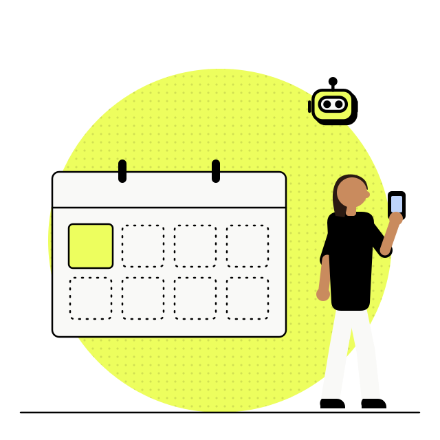
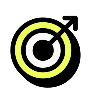
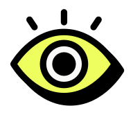

- AX
- Processo de produto e design
- IA no fluxo de trabalho
Processo de produto e design com Claude no centro
A maior mudança não foi trocar de ferramenta. Foi perceber quantas reuniões existiam só porque ninguém tinha um jeito melhor de transformar uma conversa em entregável.
Ficha do projeto
- Duração
- 1 mês para validar o novo desenho, que segue evoluindo
- Jeff
- Liderei o processo de produto e design, conectando delivery, GA e GTM
- Time
- Produto, design, engenharia e dados
O Discovery caiu de um a dois meses para cerca de uma semana. No mesmo desenho, o refinamento semanal saiu de quatro ou cinco horas para trinta ou quarenta minutos.

01 · Contexto
A Omni vende agentes conversacionais para varejo. Configurar esses agentes exige muita tentativa até a conversa ficar boa em produção, e o nosso processo não acompanhava esse ritmo.
02 · O problema
Dois gargalos ao mesmo tempo

O trabalho vivia em reunião
A gente discutia bem e decidia bem. Depois alguém tinha que transformar aquilo em PRD, story, relatório e protótipo. Esse alguém sempre demorava.
A garantia prévia custava semanas
Como construir era caro, quase toda validação acontecia antes do desenvolvimento. Fazia sentido, e consumia semanas.
03 · O que a gente fez
Da transcrição ao entregável
- Entrada
Transcrição dos rituais
O que o time já falava em reunião, agora capturado como matéria prima.
- Camada
Habilidades no Claude
Habilidades que a gente criou leem a transcrição e devolvem os rascunhos.
 Saída
SaídaOs rascunhos
- Visão de produto
- PRD
- User stories
- Relatório de usabilidade
- Protótipo
A primeira tentativa não foi essa
Cada um usava o Claude do seu jeito, e a gente passou a gerar documento mais rápido e alinhar menos. Dois PRDs da mesma semana com estruturas diferentes, e a engenharia perguntando qual era o padrão. Não existia.
A skill compartilhada nasceu como conserto disso, não como ideia de eficiência.
01Visão de produto
Vira direção antes de virar backlog. A habilidade lê a transcrição do ritual e devolve o rascunho da visão. O time revisa e ajusta, em vez de escrever do zero depois da conversa.
 02PRD
02PRD
Chega pronto para discussão, não para redação. Com o PRD já rascunhado, a Planning deixou de ser um rito semanal. Acontece sob demanda, e a maior parte dela é assíncrona.
03User stories
Entram no Kanban já documentadas. O refinamento virou tirar dúvida sobre o que já está escrito na story e desenhado no protótipo. Foi o que derrubou o ritual de quatro horas para quarenta minutos.
 04Relatório de usabilidade
04Relatório de usabilidade
Análise no lugar de rodada de teste. O Claude aponta problema de fluxo com consistência, usando heurística de Norman e Nielsen mais o que a gente já sabe do público da Omni.
 05Protótipo
05Protótipo
Nasce desenvolvido e segue direto para a engenharia. O protótipo sai do Claude Design e vai para o Claude Code, de onde a engenharia assume. Design usa o Claude Code para manter a biblioteca fiel à do código, que é a referência principal.
04 · Rituais
Saímos de Scrum para Kanban
Com o rascunho já pronto antes do encontro, o que sobrou para a agenda foi dúvida, não redação.
Planning
Virou assíncrona e sob demanda, não mais um rito semanal.

Daily
Ficou só com engenharia. Produto entra quando precisa.
Refinamento
De 4 horas para 40 minutos, porque virou tirar dúvida sobre o que já está escrito.
Reduzimos bastante teste de usabilidade, porque o Claude passou a apontar problema de fluxo com consistência, usando heurística de Norman e Nielsen mais o que a gente já sabe do nosso público.
Aqui eu cortei rápido demais
A análise pegava tudo que é padrão de interface e não pegou a única coisa que travava um fluxo de configuração de agente, que era o nome de um campo no vocabulário de quem trabalha dentro de um varejista. Heurística não pega linguagem de domínio.
Hoje a regra é que teste com gente continua obrigatório quando a entrega traz vocabulário novo ou muda modelo mental.
05 · Liderança
A conversa mais difícil não foi sobre ferramenta
O que sobra pra gente?
A pergunta que o time fez quando ficou claro que o rascunho do documento e da primeira tela sairia automático.
Eu respondi com produtividade, mostrando o tempo que aquilo liberava na semana, e foi a resposta errada. Ninguém se acalma ouvindo que vai produzir mais rápido quando a dúvida é se ainda precisa existir.
Por algumas semanas o time usou as skills no mínimo, entregando o suficiente e sem melhorar nada.
O que destravou foi mudar o critério antes da rotina. Parei de avaliar entregável e passei a avaliar decisão. Qual oportunidade entra, onde vale manter atrito, quando o campo está certo e o nome está errado.
06 · O novo funil
Cinco fases, do sinal ao pós‑lançamento
Identificação de oportunidades
Dado de produto, pesquisa e canais de feedback alimentam uma árvore de oportunidades que facilita escolher o que entra em pauta.
Quem conduz Produto e design, com dados alimentando a árvore.

Validação de desejabilidade e diferencial
Confirmamos se a aposta faz sentido antes de o time gastar tempo desenhando a solução.
Quem conduz Produto e design.
Definição e prototipagem
É aqui que nasce a maior parte da solução. O protótipo já sai desenvolvido e segue para a engenharia sem etapa de tradução no meio.
Quem conduz Produto, design e engenharia, com prototipação distribuída entre os três.
Delivery
Alfa na engenharia, que garante o funcionamento do que foi construído. Beta, aberto ou fechado, validando o experimento antes de abrir para todos.
Quem conduz Engenharia no alfa, time inteiro no beta.
Depois do lançamento
O foco vira satisfação e adoção. A validação qualitativa entra quando o dado quantitativo mostra desvio do esperado.
Quem conduz Produto, design e dados, junto de GA e GTM.
O Design System corre por fora do funil.
Em paralelo ao funil roda o fluxo do Design System, com componente aprovado direto no código antes de subir para o GitHub.
Hoje áreas fora de design também prototipam, CS inclusive, o que abriu uma discussão interna sobre controle. Resolvi separando o que cada protótipo pode prometer, não restringindo quem cria.
Criação
Novo componente nasce a partir de uma necessidade do produto.

Comportamento e uso
Definição escrita pensando também na leitura do Claude.
Aprovação no código
Validação direto no código, antes de subir para o repositório no GitHub.
07 · Antes e depois
O mesmo time, com o eixo do trabalho deslocado
| Dimensão | Antes | Depois |
|---|---|---|
| Prototipação | Concentrada em design | Distribuída entre produto, design e engenharia |
| Validação qualitativa | Quase sempre antes do desenvolvimento | Depois do lançamento, quando o dado mostra desvio do esperado |
| Rituais | Longos e na agenda | Curtos e assíncronos |
| Testes A/B | Poucas variações, porque cada uma custava caro para construir | Muitas variações, porque desenvolver ficou ágil e barato |
08 · Resultado
Sobrou tempo justamente onde o produto precisa de experimentação
E muito mais experimento rodando, que é o que decide a qualidade da conversa em produção.
Design segue revisando tudo que vira PR.
Discovery
- Antes
- 1 a 2 meses
- Depois
- cerca de 1 semana
Refinamento semanal
- Antes
- 4 a 5 h
- Depois
- 30 a 40 min
A conta estava sendo lida ao contrário
Um número desses também gera a pergunta que eu não queria receber, se dá para fazer com menos gente. O gargalo nunca foi produzir documento, era decidir com informação suficiente.
O que ganhamos não foi vaga a menos, foi aposta a mais no mesmo trimestre. E mais aposta exige mais gente sabendo julgar resultado.
no lugar do Scrum, com Planning só quando necessário
dos PRs passam por revisão de design
O trabalho de design não é mais desenhar a tela primeiro.
É decidir, entre tantas coisas que a IA já gera sozinha, onde a atenção humana ainda faz diferença.
Esse desenho segue em construção na Omni. Se quiser entender como aplicar algo parecido no seu time, me chama no WhatsApp ou veja o próximo caso.
Próximo caso, Omnichat